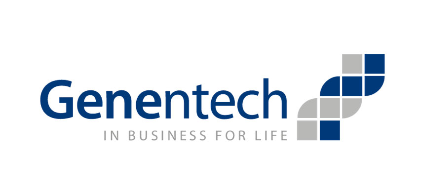

| Individual Webpage | Roisin O'Dowd |  |
|---|---|---|
| My name is Roisin O'Dowd and I am a student in ENGR 0015 |
| My Bio |
| Hobbies |
| Interesting Societies |
| Engineering Careers |
| Engineering Companies |
| Related links |
| Anything goes |
What types of companies hire engineers?
- Companies That Hire Engineers in My Area of Interest
- Genentech 
Genentech is a biotechnology company that is research-drive. Topics of research by Genentech range from bioinformatics to biochemistry to protein conformations to genetics. There are 5 main categories of diseases targeted withing Genentech: Immunology, Oncology, Infectious Disease, Tissue Growth and Repair, and Neuroscience. It is likely that Genentech will expand into microbiology and medical imaging.
-
- Types of Products Genentech offers:
- Synthetic human insulin
- Alecensa- treats lung cancer
-
- Services Genentech offers:
- Research
- Drug Development
- Cancer Treatment
Genentech is headquartered in San Fransisco, CA, where most employees work, but there are also manufacutaing facilieis in other areas of California as wll as Oregon. Genentech also has a facility in Singapore that works with E. coli. Genentech has been named one of Fortune Magazine's "100 Best Companies to Work For". Depending on their role in the company, employee salaries, schedules, and job locations vary. Most engineers in the company will have a starting salary upwards of $80,00 a year, depending on their specific job and senior engineers earn over $100,00 each year.
-
- Sanofi
Sanofi is a French multinational pharmaceutical company headquartered in Gentilly, France, as of 2013 the world's fifth-largest by prescription sales. Sanofi engages in the research and development, manufacturing and marketing of pharmaceutical drugs principally in the prescription market, but the firm also develops over-the-counter medication. The company covers seven major therapeutic areas: cardiovascular, central nervous system, diabetes, internal medicine, oncology, thrombosis and vaccines (it is the world's largest producer of the latter through its subsidiary Sanofi Pasteur). Sanofi Pasteur produces a majority of the seasonal flu vaccines distributed in the US annually.
-
- Products Sanofi makes:
- 7 varieties of insulin and medicine used by diabetes patients
- Human vaccines- Sanofi makes a range of vaccines which can prevent over 20 diseases total
- Multisclerosis medication
- Cancer treatment and prevention drugs
-
- Services Sanofi offers:
- Manufacturing and Distribution
- Research and Development
Sanofi is a parent company comprised of a few different subsidiaries, such as Genewiz and Sanofi Pasteur. Sanofi USA has most of its offices, labs, and manufacturing facilities located on the East Coast, particularly in Pennsylvania, New Jersey, and Massetchusets. Sanofi also has a number of locations in Western Europe, particularly France. Employees in leadership roles are required to be proficient in both English and French, since Sanofi is a French parent company and a lot of business is conducted in France. Engineers at Sanofi make upwards of $85,000 as a starting salarty and pay increases based on seniority. Most engineers work 9-5, although quality assurance engineers may have varying hours.
-